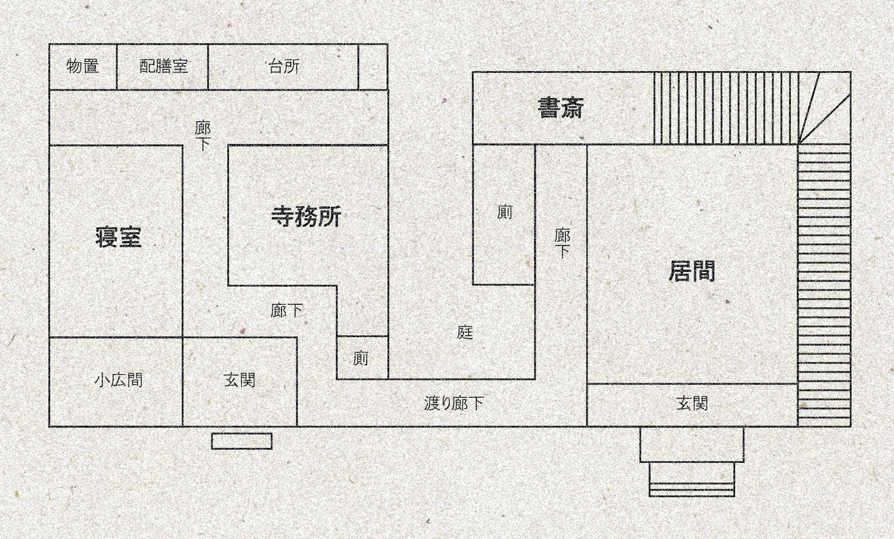
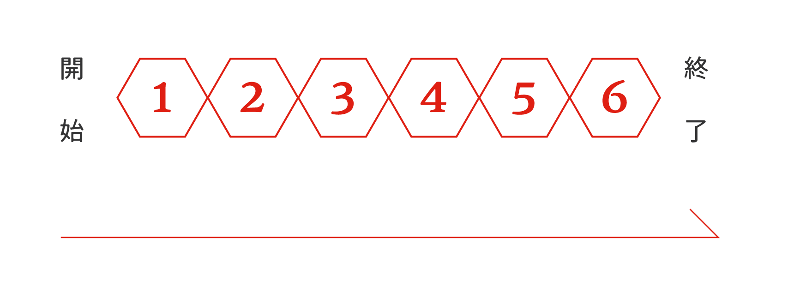

ふたりが合流するまでは、HPなどのステータスを秘匿した状態で行うことを推奨する。
合流時点でステータス開示することを想定している。
シナリオ中は戦闘が発生するため、PL同士での相談が出来るよう少なくともクライマックスまでには開示してほしい。
※以降、（秘匿）と記載のあるシーンは全て通話を分ける、個別タブにて進めるなど別HOのPLには秘匿して進行することを想定している。
#名称2#は（自身の務める/依頼を受けて訪れた）葬儀屋——
木明社。この町に古くから根差している葬儀屋で、歴史はそれなりに長い。長年凝り固まった習慣も多いが、それもあってか会社としては骨太な印象があるだろう。
窓の外の景色を横目に会議室の扉を開くと、一人の初老の男性が出迎えた。彼は
「今日は突然呼びつけてすまんね。まあ、座りなさい」
「何。ウチに関係することで、少しばかり調べてもらいたいことがあってな」
「最近街で流れてる噂は耳に入ってるかい？」
最近、街には"やけに死体が増えている"。
やれ死神様がどうだ、政治が関係してどうだと胡乱な憶測ばかりが飛び交っているようだ。
噂の出所ははっきりとはしないが、確かに近頃は葬儀の看板や霊柩車を見る機会が多い。
さらに普段の仕事で入る情報やテレビのニュースなどから現状把握していることとして、以下が挙げられる。
・死因はどれもバラバラ。
・流行病などはここのところ落ち着いている。
・上記の２点から、同じ原因で死者が多量発生しているわけではないと推察される。
-----------------------------------------
オカルト的なものを取り上げ好む界隈では、「夜になると死神様が街を闊歩している」…などという噂がもっぱら話題だ。
吐いて捨てるほどある怪談のうちのひとつだが、「死体が歩いているのを見た」「死体に食われる」などの不穏な内容になっている。情報は全てこの辺りの地域に限定されており、それが更に噂の熱を上げているようだ。
最近浮上したばかりの噂であるからか、それ以上の詳しい内容は出てこない。
-----------------------------------------
馬頭が〈知識〉 で分かる上記情報を伝えるため、開示する。
「そこでだ。#名称2#くん、君にこの件を軽く調べてほしいんだ」
「頼めるか？」
了承すれば馬頭は礼を述べる。
「最近変な噂が流れてるからか、うちの周りもなんとなく動きが怪しい気がしてなあ……」
「中でもまずいのが、町で歩いてる死体の中にうちで処理した筈のご遺体があったって話だ」
「もしかすると、誰かが裏でなんかやってたりすんじゃないかって疑ってるんだよ」
「こういうのも何だが、昔ながらの慣習も多い会社だ。その分、見えん場所で何かしら企んでる奴も居やがる」
「まあ、そのあたり……#名称2#くんならうまくやってくれるだろう。頼むよ」
現状、思い当たる行動としては以下。
・葬儀屋での調査（木明社）
・噂を聞いて回る（虎落町）
-----------------------------------------
帳簿の確認や、最近の案件についてリスト化された資料を検分することが出来る。意識して照らし合わせてみると確かに近頃は葬儀の件数が多いようだ。一見した限り他に不自然な点などは見受けられない。
資料群から以下の記述を発見する。この会社についての記述のようだ。
一般葬から家族葬、さらに身寄りのない方の民生葬までを手がける老舗企業。
主に虎落町の地域でのみ展開しており、老舗であることも手伝い町の中では利用者の多い葬儀屋。
創設当時、葬儀業はビジネスとしては一般的に展開されておらず、1760年の「シカヤマ
その後も地域貢献として取り組んでいき、1920年代ごろ会社として正式に創業することとなる。
-----------------------------------------
沿革になぞらえた簡単な文章のみが見つかる。
-
1760年、シカヤマ
-----------------------------------------
※
※「シカヤマ役病」について詳しく調べたいとPLが宣言する場合、この資料室で十分な資料は見つからないだろう。また昔の事件のため、普段から図書館などに出入りしてローカルな情報を集めたり、民俗学的な知見がない限りは思いつかないかもしれない。図書館は今後開放される探索箇所となるため、今は休館日などにしておいてほしい。
特定のめぼしい資料などに検討をつけることは出来なかったが、「シカヤマ
「シカヤマ」という単語を聞き、以下について思い当たるだろう。自動開示。
志下山と書いて「しかやま」と読む。虎落町に存在する山の名称。標高341メートル。
山のように志を高く持ち、その下で自然と共に暮らすという名前の由来がある…と虎落町の小学校に通う学生は一度は聞かされたことがあるらしい。
春は花見の名所として地域の人々に利用されており、標高の低いところでは自然公園なども作られ親しまれている。
-----------------------------------------
そういえば、志下山にはかつて寺が建てられていたと聞く。詳細については覚えていないが、今はまったく話を聞かないことから既に廃寺になっているのではないか、と予測がつく。
・葬儀屋での調査（木明社）
・噂を聞いて回る（虎落町）
・山へ赴く（志下山）
-----------------------------------------
資料室を去り廊下を歩く。ふと、誰かに見られている気配がした。振り返ってもそこには誰もいない。
（木明社に務めている探索者であれば、自分のデスクもそこにあることだろう。外部の探索者であれば、担当の人間が出迎えたりなどするかもしれない。）
知り合いの
「馬頭さんに呼び出されたんですって？」
（RP）
何か知らないか？など、木明社についての情報を聞き出そうとする場合は
素直に従うのであれば場所を移動し、仁田は一息ついた後に息を潜めてこう伝えるだろう。
「俺、心当たりがあるんです。その……ご遺体が自分で抜け出してるところを見たんですよ！」
「嘘だって思うでしょう？ でも本当なんです！」
「役職柄、病院やら会場やらをよく行ったり来たりよくしてるんですけど。深夜、残業してる時に見ちゃったんですよ、火葬場の方からぼやーっとした影が歩いてるのを……」
「とてもじゃないけど怖くて近寄れませんでした。それに、何かが腐ったような、変な匂いもしてて……何かを引きずるような音もしたかな」
「翌日、何事もなかったみたいに死体はそこにありました。無事に葬儀もやりましたよ。だけど絶対にあれは動いてました。この目で見たんですよ！」
「何が起きてんだか分かりませんが、それ以来俺はもう怖くってね。深夜残業はちょっとやめとこうかなって……」
木明社から徒歩で十数分歩くと、街角にそっと立てられた看板が見えた。木の扉を開くとベルが鳴り、人のよさそうな顔をした大柄の男性がカウンターから顔を上げた。
席に座ると布製のコースターとおしぼりがそっと置かれることだろう。手作り感溢れるラミネートされたメニュー表が既に机には用意されている。
〈メニュー〉
・珈琲（アイス/ホット）
・みるく珈琲（アイスのみ）
・黒糖珈琲牛乳
・紅茶（アイス/ホット）
・ジンジャーエール
・クリームソーダ
〈期間限定〉
・桃カフェオーレ
・はちみつしょうがミルク（ホット）
〈お得なセット〉
・ケーキセット（チーズケーキ/チョコケーキ＋お好きなドリンク）
・プリンセット（かためプリン＋お好きなドリンク）
-----------------------------------------
（ここで死神様の噂などを聞く場合、以下のように話す。）
「昔からね、ぱたぱたーっと人が亡くなる時期があって、そういう時にはよく聞いたもんです。"死神様が歩いてるねえ"って」
と、死神様について語り始めるだろう。
以下の情報を開示する。
深夜、墓場の近くを歩いていると不意に周囲の街灯などの電気がすべて消えてしまう。
そのままじっとしていると何事もなく再び灯りがつき、無事に帰ることが出来る。ただ、もしその人が墓場荒しなど死体に対して不敬な働きをしていた場合は同じ死体にするために死神様に連れて行かれ、行方不明になる。
「死神様が見ているから悪いことをしてはいけない」などと教訓的に語られることが多いらしい。
-----------------------------------------
「聞いたことありませんか？ 志下山って昔は人っ子ひとりいない時があって、今でも山の裏手の方は人の手が入ってないんです」
「"死神様が怒るから"って昔の人は言ってたらしいですよ」
「自然公園の脇の方にあぜ道があるでしょう？ あっちの方ですね、手が入ってないのは」
案内通りに進むと最初に見えるのは自然公園だ。さすがに人は少なかったが、ぱらぱらと散歩をする人などが現れては消えていく。
辺りをぐるりと見渡すと、立ち入り禁止と書かれた古い看板が目にとまった。奥にはあぜ道が続いている。これが古熊の言っていた山の裏手だろうか。
（あぜ道を進む）
進んでいくにつれ、どんどんと日の光は遠ざかり冷えた空気に満ちていく。歩を進める度、別世界へ景色が変わっていくような妙な倒錯感に襲われる。そのまま鬱蒼とした森をかき分けていくと、湿った土や草の匂いが充満していった。
匂いに違和感を覚える。さて、これまで山に入ってから感じていた生き物や草木から伝わる生の気配を全く感じなくなったのはいつからだろうか？
いやに空気が冷えている。地べたを死神が這っているような悍ましさがあり、今にも足首を掴まれてしまいそうな予感さえあった。
SANc0/1
いやに空気が冷えている。地べたを死神が這っているような悍ましさがあり、今にも足首を掴まれてしまいそうな予感さえあった。
（振り向くかどうかを確認する）
振り返った先にいたのは、おおよそ何ともとれない異形の姿であった。それは人の皮ほどに厚い何かを全身に纏い、異臭を放っている。黒く淀んだ皮膚からは一切の表情が読み取れない。獣のようなそれは唸り声を喉奥から鳴らし、鋭い歯で探索者を威嚇し、喉元に襲いかかった。
SANc1/1d6
抵抗しようとしたその瞬間、肩口に強い痛みが走る。
気付けば凶悪な牙が近くにあり、むせ返る血の匂いと熱が充満した。
抵抗しようとしたその瞬間、肩口に強い痛みが走る。
気付けば凶悪な牙が近くにあり、むせ返る血の匂いと熱が充満した。
途端、首筋に急激な痛みがやってくる。気付けば凶悪な牙が肩口を抉り、血の匂いと熱が広がった。
SANc1/1D3
ツンと鼻を刺激する、煙草の臭いがした。しかし、少し匂いに違和感があるような気もする。
微かに嫌な臭いがする。煙たく、死を連想させる匂いだ。
横たえた死、その手を取る方がよほど自分にとって楽なことではないだろうか？
−−そんな中、一人の（男性/女性※HO1の性別に合わせる）の姿が見えた。襖障子に囲まれているが、あたりは血まみれだ。悍ましい空間の中に一人、ただぼうっと座っている。何時間、何十年とそこにいるようにさえ思えた。永遠の孤独とともに、まるで檻の中に囲われているように。
（彼/彼女※HO1の性別に合わせる）がふと、こちらを見つめた気がした。
手足が冷えている。もうすっかり息をしなくなって久しい骨のように身体は小指ひとつも動かず、ぐるぐると巡る思考だけがいつまでも己の内に潜む恐怖を否応なしに駆り立てていた。
今日もまた、いつもと変わらぬ薄ぼんやりとした時間を過ごすのだろうと予感が囁く。それでもあなたは起き上がり、まず一番に煙草を手に取った。火を付け口を寄せる。
唇から煙を吐き出せば、天井に登っていくそれらを眺めるにつれ思考がはっきりとしてくる。
そうだ。今日はこの煙草を寄越してくる、円山が訪れる日であった。
渡り廊下を歩き居間にたどり着く。見渡せばもうずっと長い間見てきた景色が、やはり変わらずそこにあった。一人で住むには広々としている、寺の様相をした#名称1#の住み処だ。実際に過去は立派な寺であったのだろうとは作りを見てなんとなく思うが、他に寺らしい寺を見たことがないので確かめようもない。
大きめの机にいつも使っている火鉢、端の方にはまた別に机や棚をこさえた作業場がある。作業場といっても小さく簡易的なものだが、ほどよく自分に馴染んだ場所だ。
（朝の生活などのRP。ついでに寺のMAPを開示してよい）
我々の住む
-----------------------------------------
背表紙がすり切れ、角が若干丸くなっていることに気が付く。過去この場所にいた誰かが繰り返し読んでいたのではないか、と察するだろう。
円山が訪れる日には、いつも決まって彼に香を用意している。それによって生活のための物資などと引き換えているのだ。
現在の材料から照らし合わせ、彼の求めるものを作る必要がある。
香には香りを楽しむものをはじめとして、精神への効能・肉体への効能などさまざまな作用がある。
●精神への効能
PL情報：
●肉体への効能
時間：技能１回分
PL情報：
●眼精効果
時間：技能1D2回分
PL情報：
●活性剤
効果：興奮状態に陥る
時間：1D5ラウンド持続
PL情報：いずれかの
-----------------------------------------
円山が訪れる日には、いつも決まって彼に香を用意している。それによって生活のための物資などと引き換えているのだ。
現在の材料から照らし合わせ、彼の求めるものを作る必要がある。
香には香りを楽しむものをはじめとして、精神への効能・肉体への効能などさまざまな作用がある。
荒く跳ねた髪の毛をそのままにした黒髪の男が立っている。不健康さが身からにじみでるような、決して清潔とは言えない風貌で愛想らしいものも感じられないが、そう悪い男でもないことをあなたは知っている。現に睨み付けているのではないかと思える視線さえ、彼にとっては常のものだということを認識しているくらいだ。
#名称1#にとって繋がりがある唯一といって良い人物、それが円山だった。彼は#名称1#があまりこの寺を離れられないことについても知っており、物資を調達してやって来ることもそれに由来している。どうやら自分の父親と顔なじみらしいということくらいは把握しているが、それ以上のことは知らない。
「……そうか。まあ、何もないなら、それに越したことはないと思うがな」
「今日の荷物だ。煙草もまた仕入れてある」
「代わりにいつものをくれ」
香を渡すと、彼はそれを確認して頷きあなたに荷物を渡す。
「……そういや#名称1#、近ごろ街の噂を聞いたことはあるかね」
※噂について詳しく調べようにも、山を下りる以外に情報を得る手段はない。仮にHO1が町の情報をコレクションする趣味を有していたとしても、リアルタイムの情報を手に入れる事は難しいだろう。
「あんまり具合を悪くして山の中で倒れられても適わん」
もし
もし
※煙草には人間の灰が混ざっており、死のエッセンス（カーと呼ばれるもの）を摂取させることによりこの山とHO1を馴染ませている。これはHO1の父親から指示があって行っているもので、〈カーの分配〉を行っているかつこの山がモルディギアンによって管理されている間は有用な手段として利用できるものとしている。
「俺以外にも山で暮らしてる奴は居やがるよ」
「会いてぇなら今度、連れていってやろうか？」
「愛想の良い奴はそんなに居ないな」
「何が好きとかもさっぱりだ。酒はよく飲んでいたな」
「強いて言うなら、お前の話だろう。親父とは似ていないな、とかそれくらいの」
「次は本も持ってきてほしいということか？」
「悪いが、俺は興味がないな」
「別に面白いものはない」
「頑張っても出られるわけじゃなし、諦めた方が楽かと思うが」
「…………」
「……もし出られるなら、出たいと思うのか？」
「……ああ、そうだ。次に俺が来るまでに、山の材料をいくつか集めてくれないか？ 出来る範囲で構わない」
「よろしく頼む」
円山は寺を後にするだろう。
生き物の声はしない静かな山だ。自分以外の一切の生命を感じさせない当たり前の日常の風景。周囲の地形についてはある程度熟知しているため、迷うことなく目当てのものを採取することが出来る。
テキパキと山菜や木の実、薬草などを採取することが出来る。
違和感の正体を思考するが、明瞭とした答えにはならない。しばらく逡巡していると、不意に遠くから物音が聞こえた。
音からして、それなりに重量のある何かの物音だ。鉄など硬質な金属などの音でもないため、無機物などではないのかもしれない。
微かにうめき声が聞こえた。人の声だ。僅かに血の匂いも漂ってくる。
#名称1#が枯れた草木をかき分けて進むと、ある一点から鉄の臭いが鼻に充満することに気が付く。視線の先には血にまみれた（HO2の容姿）の姿がある。人間だ。
しかし何度も浅く息を吐いており、相当な深手を負っていることが見て取れるだろう。
当然のこととするか興味本位か、目の前で死なれても夢見が悪いとするかはさておき、兎にも角にもこの人間を家まで運び、それなりの手当をしなければと思い至る。
この永い
｜ ◆ ───────────── ◆ ｜
クトゥルフ神話TRPG
鬼氛歸命
｜ ◆ ───────────── ◆ ｜
#名称2#がゆっくりとまぶたを開けると、ぼんやりとした蝋燭の灯りがまず視界に入った。傷の痛みは多少和らいでおり、見ると包帯などで手当された痕跡がある。
#名称2#は
（ここで両者のステータス開示を想定している。少なくともクライマックスまでには開示すること。）
家屋、というにはいささか開けすぎた場所だ。天井が高く畳や柱の様子から寺院のような場所ではないかと察するが、それにしては寂しい印象があるだろう。周囲の景色を伺っていると、奥から人が歩いてくるようだ。
（HO1とHO2の初対面となる。RP）
#名称2#の怪我が治るまではここに居てもらうのが良いのではないだろうか。
それに、円山以外の人間と会うことは記憶している限りはじめてのことだ。なにか面白い話が聞けるのではないか、と多少の好奇心も刺激されるだろう。
それに、目の前の人物には見覚えがあった。あの夢の中で見た血まみれの空間に佇む人物と同じ姿だ。自分の意識が途切れる前に夢の中で見たことには、何か理由があるのかもしれない。
（#名称2#にも改めてMAPを開示すること）

昼・夕の1回ずつ探索を行うことが出来る。夜は暗くなるため不可能。
探索者によって発見出来る情報が異なる場合がある。
《寺内》
・居間
・書斎
・寺務所
・寝室
《外》
・寺周辺の見回り
・山
HO2は1日に1回のみ
HO1が協力する場合、
上記の手当を行わない場合、HO1は好きに
火は頑張っておこす必要がある。電気は存在しない。
井戸から水を流しているため水道は生きている。
最低限の食事や風呂には困らないだろう。
------------------------------------
※
※
鏡で自分の姿を見ないようになって久しいが、自分もあのような表情を浮かべることがあるのだろうか？
#名称2#と近くにいると、妙に心がざわつく。これまでになかった生活の変化によるものなのかもしれない。
その確かな正体は知れないが、#名称2#が円山以外に会話を交えることのできる初めての人間であることには違いない。
※PL情報：
以後、#名称2#と共に行動している時にのみ〈正気度ロール〉が発生するようになる。
HO2の正気度ロール後、〈1d100〉を行うこと。成否についてはKPが管理する。
HO1のみの個別探索の場合は発生しない。
-----------------------------------------
追加される探索箇所は以下。
・木明社
・虎落図書館
-----------------------------------------
HO1には特殊な
《寺内》
《外》
《町（HO2個別）》
いずれもシナリオクリアには必要な情報となるため、KPは積極的に誘導をしてほしい。
HPが10以上になる→
以下はいずれもシナリオクリアに必須の情報ではない。
２箇所探索したあとは、１日の終わりに情報共有を含め生活を行うとよい。ゆっくりRPを行い、お互いのことを知る機会を作ってほしい。
また、隅の方に別の作業机のようなものが置かれてある。さまざまな缶が並べられて木棚に収納されていたり、小皿や瓶に入った水、すり鉢など様々な器具が置かれているだろう。
さまざまな薬草や香料の匂いが鼻腔をつく。作業机のあたりは特に香りが強いようだ。
我々の住む
-----------------------------------------
背表紙がすり切れ、角が若干丸くなっていることに気が付く。過去この場所にいた誰かが繰り返し読んでいたのではないか、と察するだろう。
ずいぶんと年季が入ったシガーケースだ。箱状になっており、蓋を開けると煙草が何本か入っている。銘柄らしい銘柄は分からない。
-----------------------------------------
炭や灰と別の不純物が混じっていることが分かる。
魔術的な力が込められている火鉢であると察する。そこだけ時空がねじ曲がっているような異質さを感じる。
何らかの方法を用いることでこの火鉢の魔力を得ることが出来るのではないだろうか。
何らかの方法を用いることでこの火鉢の魔力を得ることが出来るのではないだろうか。
既に作られている香を発見することができる。
〈1d3〉 によって発見する香を決められる。
１：●精神への効能（SAN+1）
２：●肉体への効能（HP+1）
３：●眼精効果（探索技能+20）
１：●精神への効能
２：●肉体への効能
３：●眼精効果
火を消した状態で注意して嗅ぐのであれば、わずかながらに匂いに違和感を覚える。
すっかり燻されて匂いの正体は分からないが、あまり良くはない匂いだ。
すっかり燻されて匂いの正体は分からないが、あまり良くはない匂いだ。
意識に何かが流れ込んでくる。映像のような、夢を見ているような、曖昧な景色が。
…………………
…………
…
見える風景はいつも自分が住み処にしているこの寺に他ならなかったが、今ほど寂れてしまっているようには見えなかった。
庭が緑に生い茂っている姿は不思議に見える。こんな景色は今までに見たことがなかったからだ。
空を見るに、穏やかな天気のようだった。千切れた雲が揺られ彷徨い、のびのびと進んでいる。
寺の中、幼い自分の姿を客観視して眺めていた。自分は一人きりではなく誰かの腕の中で眠っている。
自分を抱いているのは男に見えたが、顔や表情はよく分からない。まるで夢の中を歩いている心地だった。
男が何かを自分に向けて呟いている。眠っている幼子は当然反応せず、男もそれに満足しているように見えた。
不意に風が吹く。感覚さえ曖昧な夢の中でそれが分かったのは、庭から木の葉が舞ったからだ。
幼子の髪にかかった木の葉を男は静かな仕草で払っている。それは、ひどく優しい手つきに見えた。
…
…………
…………………
意識が浮上するその前。風景の一部がぐにゃりと歪んだ。
霧がかった煙、その中から何かが這い出してくる。
痩せて飢えた獣がこちらを見ていた。
獲物を待ち構え、ただ時空の暗闇から自分を覗いている飢餓の獣がそこには存在していた。
……すぐにその姿は霧散し、周りの風景も見知ったものに戻る。これが火鉢による効果とでもいうのだろうか。
ＨＯ１が仮死状態であること、映像の影響が微弱であること、ある程度魔術に長け保護されている寺の内部にいるため、ティンダロスの猟犬はこのシーンでは登場しない。
改めて見てみると、床の隅にいくつかシミのようなものが見受けられる。今は綺麗にされているようであるが、過去の汚れの名残があるのだろう。黒っぽい掠れたような跡で、黒と赤茶の色が混じっているように見える。
※CT情報：少なくとも茶色のものについて、匂いもなくかなり昔のものだろうが、血なのではないかと思い当たる。
ぱっと見ただけでも複数の筆記があることから、過去に様々な人間がこの書斎に出入りしていたのではないかと推測がつく。
引き出しの中を見ていると、折り重なった紙の中で特に異様なものを発見するだろう。びっしりと文字が埋まって黒く見える手紙だ。紙質からしてかなり古いものと思われるが、文字は震えており隙間なく無秩序に羅列されている。読んで内容を理解するには時間を要するだろう。
引き出しの中を見ていると、折り重なった紙の中で特に異様なものを発見するだろう。びっしりと文字が埋まって黒く見える手紙だ。紙質からしてかなり古いものと思われるが、文字は震えており隙間なく無秩序に羅列されている。読んで内容を理解するには時間を要するだろう。
お許しください。蔵に入れるのはもうおやめください。
あれがやって来るのです。暗闇の谷から覗くように、黒く歪んだ形を持たないあれが悪臭を伴ってやって来ます。
あれと対峙する時、私は狗のように四つ足で立ち上がることが出来ず、心臓を鷲掴みにされたようにもう、動けなくなってしまいます。助けてください。あなたは私が叫び声を上げても助けてくださらなかった。だから蔵には入れないでください。
直に私の頭の中に入ってくるでしょう。毎夜声が聞こえます。それは宴をしています。
鬼がいる。それらは無尽蔵に存在し、我々の魂ごと食らいつくそうと牙を磨いている。
あれを私に近付けないでください。もうすぐそこまで来ている。
夜を越えて夢を壊したあの黒い塊が現実に現れるとき人間の脆い世界は簡単に壊れてしまう。
比良の呪文を下さい。きのと様を退けたあの禅師を呼んでください。
私はもう駄目です。鬼がいた。腹を空かせていた。鬼に喚ばれてあれが食べにくる。
あれがくる
深淵の谷より出でる闇
ありえべかざるものへ
鬼よ 捧げよ 拓けよ
もぐる むぐるうり いあ・な・や
ぎぬる すてすなく にょぐださ てぃび
-----------------------------------------
#名称1#がこの手紙を読んだ場合、
また震えた字の手紙および呪文を読むと、HOそれぞれに秘匿が発生する。
以降、「蔵」に向かうことが出来るようになる。
怪我を負った際に見た奇妙な光景がそれだろうか？ あり得るわけがないと断じる心とは別に、妙な質感を持って恐怖が身を浸す。
"あれ"と呼ばれる深淵よりの暗黒の化け物、それは未だなおこの山に潜んでいるというのか。
SANc0/1
写真を発見する。手に持った瞬間、ほのかに紫煙をまとった匂いがした。写真をみると、ぱっと見て見覚えのある顔がうつっている。#名称1#だ。姿は今とそう変わりないようだが、紙は色あせており最近撮られたものだとは思えない。
#名称1#が一人で写っている写真。
かなり色あせて劣化しており、写真そのものに年数の経過を感じる。
だが、#名称1#の姿は今とそう変わりないようだ。
-----------------------------------------
仮に保存状態の悪さなどをあげたとしても、状態や技術からみておそらく１０年や２０年という歳月は優に越えている写真なのだろうと感じる。
一般の書籍から情報を探すことは難しいため、#名称2#が調べるのであれば苦労するだろう。
※#名称2#は
一般に流通している書籍から「乙様」の文言を確認することは出来なかった。
あたりに散らばった手書きの紙などをたぐり寄せてさまざまな文言を寄せて考察するに、乙様とは以下のような存在なのではないだろうか。
-
・「乙様」とは極小地域にのみ通じる単語である
・遙か昔この山に訪れて多数の人々の死を呼んだ”何か”、及び”現象”があった
・町の人々は「乙様」と称してこれを恐れ、寺を建て死者を鎮めようとした
・「乙様」が現れた当時、一帯は死に満ち、山は「屍と化す山＝シカヤマ」と名付けられ禍いや疫病の扱いを受けた
・これが後に「シカヤマ役疫」として記録に残っている
・「乙様」は消えたわけではなく、形を変えて山に存在している
・山を人の領域とそれ以外の領域に区分することで町としての解決を目指すこととなった
・これを「
・「木の弟の領分」には、人ならざる者やそれによる犠牲者なども埋葬されている
-----------------------------------------
詳しい年月日については記述がないが、「シカヤマ役疫」と書かれている単語が頻出している手紙を見つける。書き文字の風合いからして、かなり昔のものだろうと察せられた。判読できれば要約することが可能。
山で濃霧が起きてから、この山では死者が相次いでいた。里から人が誘われるように山へ消えていき遺体として見つかる…といったことが多かったようだ。手紙の中には、「禅師のおかげで霧が落ち着いた」など感謝を述べるものもあれば「遺体の中に自分の家族がいる筈だ、どうしても探しにいきたい、山に入らせてほしい」といった嘆願書めいたものまである。
-----------------------------------------
木棚の中にある巻物や紙片などから、めぼしいものをいくつか見ることが出来る。
禅師のご活躍によってこの町はひとまずの安息を取り戻した。
だが大量に出てしまった遺体の処理については追いついていない。
なかには遺体に自らの心臓を探させ、生き返らせようとした者までいる。
それを行ったのは寺の僧だった。なんとか止めたところ、遺体は溶けて崩れてしまった。
禅師の与え教えた術を利用するなどと、もはや悪鬼の道に足を踏み入れているのではないか。
嘆かわしいことだ。彼には反省を促す必要があると話し合っているのが聞こえた。
それもこれも満足に墓さえ作ってやれないこの状況が良くないのだと思う。暫くは思い悩む生活が続くだろう。
（次のページ）
考えあぐねていたところに鬼が現れた。我々を襲うでもなく、それは遺体を喰らっていた。
人間の言葉が理解出来るようで、禅師が何か書物を漁り彼を「邪仙」と名付けた。
悍ましい異形の存在であろうとも、我々は僧侶としてこれを祓わなければならない。
（次のページ）
里の人間に報告を行った。協議と検討を重ねた結果、彼を迎え入れることになった。
共に生活をしてみるとある程度の会話も出来ることが分かった。食事は変わらず遺体から捜しており、我々を襲う様子は見受けられない。これは禅師の施しのおかげでもあるだろう。
しかし、奇妙な隣人と時間を共にするうちにどうにも私は彼に人間の情動のようなものを見いだしてしまっているようだ。
もうすぐ冬が来る。そうなったら、彼に寺で暮らすよう話を持ちかけても良いのかもしれない。
これは皆とも相談し、検討する。
（次のページ）
彼のこともあるから、というわけでもないが、火鉢に魔力を付与することとなった。秋から冬にかけて行う。
生き物は里との会合の際、乙の領分外の山から兎を捕まえてくること。
この寺は特異だ。今後どう発展していくかは私のような些末な僧には分からないが、魔術に聡い者がこの寺を訪れた時、分かることがあるかもしれない。人間の生は短いのだから、出来ることはしておくべきだろう。
火鉢を行使する場合は、火を消し特別な木で出来た炭をいれる。木は旧いものでなくてはならない。
寺の入り口正面から見て西側の壁と火鉢の模様がついた面を向き合わせ、火を焚く。
形ある煙が出てくる。魔力を得たい場合、全身にくまなく浴びるのが一番効率が良い。
（次のページ）
駄目だった。鬼は結局鬼としてしか生きられないのだ。それどころか人間を巻き込み、鬼とさせる危険さえある。
もともと鬼とは"種族"を指し我々はそれを区別するが、これは"状態"を指す言葉でもあるのだ。
血から、悍ましい書物から、あらゆる部分に狂躁への道は繋がっている。
暗闇がやってくる。恐ろしい闇を携えて鬼が笑っている。
我々は禅師によって守られているに過ぎない。里に下りれば、彼は人を皆喰らい尽くしてしまうだろう。
あれから彼は寺に姿を見せなくなった。それもそうだろう、我々は元より共存し得ない存在だったのだ。
山の穴蔵にあの鬼どもを見たという僧が居たが、彼は日に日によく分からないことを呟いている。信用していいものか分からない。
悪さをして蔵に入れられてから、あれは様子がおかしい。
-
それ以降の記述はない。
-----------------------------------------
炭といえば、香を作る際にも使用するもので作業場にも用意がある。詳しい年数についてはなんとも言えないが、あの炭は状態からして旧い木から作られたものだっただろう。充分に代用出来るのではないか。
書簡などを漁ると、確かにこの寺は「清天寺 」と呼ばれているらしいことが分かる。ただ、寺といっても急造されたものであり、寄り合いのようなものに近いため本来の寺としての役割とは多少異なるものであることも察せられるだろう。
押し入れも多く、中には布団や蝋燭、替えの着物など雑多なものが色々と放置されていた。ほんのりと黴の匂いがしており、中に入っている物品はあまり使われていないようだ。
押し入れの襖の隙間に何か挟まっていることに気が付く。取り出して見ると、くしゃくしゃの紙きれだと分かるだろう。手にとった瞬間、腐敗した獣の匂いが鼻を刺激した。紙の上では墨のようなもので殴り書かれた文字が躍っている。
こちらに来い あいつも連れてくればいいだろう
人の社会はずっと昔からお前達のものではなくなっている
今さら人の世には戻れない
あれを鬼にする方法を知っている
興味があるならあの場所に来い
-----------------------------------------
寝室を後にしようとしたその時、ふと視界の違和感に気が付く。部屋全体が薄ぼんやりとした灯りに照らされ、さまざまな色に移り変わっていた。光源を確認すると、床の間にあった乳白色の宝石であることが分かる。宝石はそれそのもの自体が光り輝いており、それだけではなく、表面には森や草花、さまざまな風景が代わる代わる映し出されて存在している。やがておもむろに煙をまとったかと思うと、いつの間にか静かな冷気がゆるやかに場を満たしていた。
さらに、奇妙な映像が頭の中に流れ始める。
…………………
…………
…
おそらくは今自分たちが居る寺の姿が見える。居間のようだ。柱や畳は今よりもずっと若く傷も少ない。だが襖障子が一面すべて赤く染まり、不定形の肉片たちが畳を濡らしていた。その真ん中、赤に身を染めた人間がふたり連れ立って何かを話している。どちらも影がかかったように輪郭が曖昧で、男である以外にどんな人物かは判別がつかない。ふたりは会話をしているようだった。片方の男は声すら不明瞭で、よく聞こえない。
「良い機会だ、生き残ったその稚児はお前に譲ろう。新鮮な肉だ」
「………………」
「バカを言うな。人間の血の臭いにやられて、直に押し寄せるぞ。この山はとっくに人間の住む場所じゃない、放っておいても死ぬ命をどうする」
「だから殺せと言っているんだ」
「……心臓を？ 禅師の奇術や魔石に影響を受けたのかもしれないが……、…………」
「分かった、もういい。好きにしろ。俺は手を貸さない」
「鏡の世界に戻る。お前はせいぜい人間の振りを楽しめば良い」
…
…………
…………………
気が付けば部屋の真ん中に立ち尽くしていた。目蓋の裏に先ほどの明滅した光がチカチカと残っているようでどうにも落ち着かない感触があるかもしれない。あれほど光り輝いていた宝石はいまは鳴りを潜め、ただ沈黙を守っていた。
背筋を冷えた空気がなぞる感触だけが、いま起きた現象が夢まぼろしではないことを語っているようだ。
※映像：HO1の父親が生き残りの稚児・HO1を見つけ育てようとするシーン。あの方とはニョグタを指す。
南京錠がかけられているようだ。固く閉ざされており、扉に手をかけても開く様子すら見受けられない。
よく見ると、扉付近に小さく傷が刻まれている。作為的につけられたものだと思えるような形だ。
また錠の鍵穴の部分がやけに黒ずんでおり、触れていると冷気が指先に伝わった。何か良くないものでも閉じ込めているような、嫌な空気だ。
また錠の鍵穴の部分がやけに黒ずんでおり、触れていると冷気が指先に伝わった。何か良くないものでも閉じ込めているような、嫌な空気だ。
古い傷跡で分かりにくいが、五芒星のような形をとっているように見える。
※基本的に、HO1が鏡の世界（ドリームランド）に行くまでは鍵が得られないため入ることが出来ない。
扉に手を掛け力を入れる。力を入れるほど木の軋む音が鳴り、蔵が悲鳴をあげているようにも思えた。その時、ずるりと扉の向こうの暗闇から質量を持った何かが現れるような気配がした。それは容易に蔵の隅々から沸きだし、地面をのたうったあと、ゆっくりと探索者たちの方を向いた。
SANc1D2/1D4+1
戦闘ラウンドが発生する。
戦闘ラウンドが発生する。
HP 60
DEX 20
触肢 100% ダメージ1D10
蔵から離れるのであれば問題なく逃れることが出来る。判定は不要。
鍵を差し込むと、軽い音を立てて錠が開いた。
中は黴と砂の匂いが混じり、空気が籠もっている。中に入るとひんやりとした冷気が足元をゆるく伝った。小さい蔵の中に詰められるだけ荷物が積まれている、といった印象で、いやに無秩序な空間だった。ぼんやりとした暗がりの中、書籍の類いから数珠や杖のようなもの、用途の分からない置物までさまざまが揃っている。
近付いていくにつれ、襖障子の異様さについて理解することになる。
数ある取り外された襖たちはすべて赤黒く変色し、腐った鉄錆の匂いが鼻を突いた。素人目にもそれらが血液の跡だということが分かるだろう。どれも殆どが血に塗れているようで、その数は明らかに異様だ。
SANc0/1
数ある取り外された襖たちはすべて赤黒く変色し、腐った鉄錆の匂いが鼻を突いた。素人目にもそれらが血液の跡だということが分かるだろう。どれも殆どが血に塗れているようで、その数は明らかに異様だ。
襖の近くに小さな飾りが置かれている。よく見てみると、耳飾りのようなものであることが分かる。
耳飾りは青磁を思わせる薄い青緑色をしており、円形の中に穴が開いている作りだ。
筋が入っており、一部取り外すことが出来る仕組みになっている。取り外してみると、小さな音がして耳飾りが二分される。開けた瞬間に粉のようなものが少し舞った。中には粉塵が入っているようだ。
耳飾りは青磁を思わせる薄い青緑色をしており、円形の中に穴が開いている作りだ。
筋が入っており、一部取り外すことが出来る仕組みになっている。取り外してみると、小さな音がして耳飾りが二分される。開けた瞬間に粉のようなものが少し舞った。中には粉塵が入っているようだ。
蔵の中で見つけた青緑色の耳飾り。
一部に切れ目がはいっており、中を開けると粉が入っている。
※PL情報：さらにMPを5ポイント貯蔵している。
-----------------------------------------
突き出して蔵に出ている岩の表面だけやけに黒く変色している。
黒雲母（くろうんも）が含まれている火山岩など岩の変色には様々な原因が考えられるだろうが、この山の状況を考えれば条件には適していないと分かる。自然発生的に生まれたものにしては不自然な印象だ。
くしゃくしゃになった一枚の紙片を見つける。床に落ちていたようで、拾い上げると一冊の本の中から破り取られた痕跡が窺えるだろう。ところどころがシミになっており、非常に読みにくいものだ。その殆どが読めない状態になってしまっている。
もし私が立派な志をもって寺へ向かったのではないかと問われれば、濃霧に消えたあの人が見つかるかもしれないと思って寺に行くことを志願しただけだとしか答えようがない。言葉にしてみれば奇っ怪なことだが、結局のところ人々から精神力を抜き取るための手駒として我々は用意されたに過ぎないと私は考えている。
禅師は人のためになることをと言っているが、私のためには何もしてくれなかった。あの人を生き返らせることは出来ないというのだ。人の道に反するなどとおためごかしを振りかざして、何が禅師か。彼はかつて人を喰らった鬼を祓ったらしいが、それが真実であるかは甚だ疑問である。
禅師は何もしてくれなかった。
だから自分でするしかなかった。
もう考え得る方法はあれしかなかったのだ。死体の山はもはや里の人々によって投げ込み寺と化し、今日も簀巻きになった女の死体が捨てられていた。このままでは、あんなところに彼女があのままではいけない。
なのに失敗した。
あの人は腐り落ちて最後に私を見ていた。硝子玉のような瞳が次第にどろどろに溶けて眼孔から落ち流れていた。
私の心臓を明け渡してしまいたかった。出来なかった。彼女は泥と同化し、形をすべて失った。私のせいで。
戒めとして蔵に閉じ込められた。ここは何もすることがない。こんなものを記すことしか許されない。
それにしてもこんな蔵で夜を明かしているからか、妙な夢を見る。
夢の中で様々な化け物、怪物、怪異なるもの、それらが次々に宴をして自分を呼んでいるのだ。
不思議とそれらは自分にとって良い物であるかのように思われた。少なくともその狂乱に身を任せていれば、快楽と言ってしまってもよい心地の良さがあった。夢で思うさま肉を千切り、骨を喰らい、酒池に溺れる。
闇の深淵であの方は様々なことを教えてくれる。奇異なる呪文、それらの中にあの方を呼ぶ術があった。
呼んでみたい。あの方はここにいる。ここはきっとあの方と繋がっている場所だ。禅師は何もしてくれなかったが、もし、もしあの方……”ありえべかざるもの”が私の望みを叶えてくれるならば。
地に溶け腐った肉塊となったあれを救済し得る何かを授けてくれるならば。
-----------------------------------------
紙のシミについて、劣化の状態から涙や血などが付着した跡のように見受けられる。
※退散を行う/行わないの選択はクライマックスの難易度に影響する。退散の呪文は蔵の岩肌近くで行わなければならない。また、呪文に失敗した（差し出すPOWの値が神格のPOW22よりも低かった）場合は何も起こらない。
ありえべかざるものはこの蔵を道とし、現れたのだろうか。
手順通りに塩を巻き、霊液を垂らす。呪文を唱え終わった時−−岩肌の黒ずみが一層濃くなり、それは現れた。
黒い不定形をした粘着質の塊が人間の指ほどもある無数の触手を伸ばし地面を這っている。
おおよそ玉虫色と表現すればいいのか、漆黒のぬらついた触手をいくつも揺らめかせたゼラチン状の塊。現実からは余程かけ離れたありべかざるもの。
ニョグタを目撃した探索者は
（支払ったMPが対象の神格のPOWと同等、あるいは高かった場合）
呪文を唱え終わるや否や、アメーバ状の黒い物体の動きが鈍くなる。最後に呪文を行使した探索者に向かってその触手を伸ばすだろう。
呪文を唱え終わるや否や、アメーバ状の黒い物体の動きが鈍くなる。最後に呪文を行使した探索者に向かってその触手を伸ばすだろう。
触手が襲いかかるその寸前、力尽きた触手は地面に倒れ込み、やがて蒸発するように奇妙な煙を起こしながら消えていく。
触手による
（支払ったMPが対象の神格のPOWと同等、あるいは低かった場合）
戦闘ラウンドが発生する。
戦闘ラウンドが発生する。
HP 60
DEX 20
POW 22
触肢 100% ダメージ1D10
蔵から離れるのであれば問題なく逃れることが出来る。判定は不要。
ただし、退散には失敗しているためクライマックス時にニョグタが現れることをKPは留意しておく。
寺の石碑を確認すると、経年劣化により石が削れてしまっている。
「清天寺 」と書かれていることが分かる。
誰もいない寺で一人暮らしている#名称1#の存在に改めて違和感を覚えるだろう。
砂利を踏む音が聞こえた。音の方向へ視線を寄せてもそこには何もない。
また音がする。今度は別の方角からだ。砂を蹴る足音の筈だが、自分以外の人間の姿は認められない。
やがて音は聞こえなくなり、ただただ不穏な気配だけが場を満たしていることだろう。
また音がする。今度は別の方角からだ。砂を蹴る足音の筈だが、自分以外の人間の姿は認められない。
やがて音は聞こえなくなり、ただただ不穏な気配だけが場を満たしていることだろう。
似てはいるが、あの時はもっと煙の匂いが混じっていた筈だ。
柔らかい皮膚を裂き、中にある臓腑を得たいという欲求が沸々とわき上がる。
いま自分は、目の前にいるこの人間を心の底から喰らいたくてたまらないのだ。
なんとか堪えることが出来る。じわりと額を汗が伝うだろう。
#名称2#に対する欲求を抑えることが出来ない。任意の
だがこの場所を何故か知っている。寺から誰かが自分を運んできてくれたような。
いや、それは本当に自分だったろうか？
自分は両手に乗せられて、この道からさらに奥へと運ばれていた。
そうだ。先に進めば、やがて洞窟が見えていた筈だ。
以降、探索箇所に「洞窟入り口」が追加される。
静かな霧の中、影が濃くなる場所があった。注視しようとした瞬間、全身に浴びせるような殺意が振ってかかる。
突然の攻撃を避ける、或いは受け止めることが出来る。
背を歪め、むき出しになった歯が鈍く輝いているのがまず見えた。前屈みの姿勢でだらりと腕をのばし、犬を思わせる顔をしている。獰猛な息遣いをするたびに漂うカビの匂いがその存在の醜悪さをより際立たせていた。二足歩行をした人間によく似たそれは、鬼と称するに相応しい容貌だ。
戦闘ラウンドを開始する。
（既に
逃げる場合は食屍鬼との
さらに#名称1#がいる場合は成功率
（能動側であるPCの
STR 16
DEX 10
HP 13
DB +1D4
＊１ラウンドのうちにかぎ爪と噛み付きが出来る
かぎ爪 30% ダメージ1D6+db
噛みつき 30% ダメージ1D6+1d4（爪でいたぶる）
※これまでHO1が食屍鬼に出会っていなかったのは、食屍鬼たちがHO1を同族と判断し襲っていなかったため。HO2が来たことにより、人間の匂いが強くなり食屍鬼の本能として襲いかかることになる。
※１人行動の場合、#名称1#が訪れている場合はそのまま
進んでいると、足先に何かがあたりくしゃ、と音を立てた。一片の紙のようだ。少し寄れてはしまっているが、破けたりなどはしていない。
洞窟を出ると、紙が手紙であったことに気が付く。
元は質の良い紙だったのだろうが、時間経過と保存環境の悪さによりところどころが汚れたり、シワがついたりしている。さらに書かれている字は震えており、ひどく読みづらいものだ。
元は質の良い紙だったのだろうが、時間経過と保存環境の悪さによりところどころが汚れたり、シワがついたりしている。さらに書かれている字は震えており、ひどく読みづらいものだ。
私がもうろくに喋れず、精魂尽きようとしているのを察して文など寄越したのか。
自分の死期は一番自分がよく分かっているつもりだが、お前にも透けるものなのだな。
分配を止めるつもりはない。魔力が注がれたものがそばにあるほど、あれは守られるだろう。
頼みがある。
私からの文が届かなくなった時、#名称1#の面倒を見てほしい。
人の灰を渡しておくれ。この山とよく馴染み、棲まえるように。
もし枷と思うのであればそれで構わないが、決して反故にするな。
私はお前を恨んでこそいないが、奪われた人としての生については心底名残惜しく思っている。
洞窟は他の人間に見つからないように術を施した。
寺の蔵に飾りを隠している。あれがなくては普通の人間はあの穴蔵の中に入ることは難しい。
逆に言えば、それさえ守ってくれればあの子が脅かされることはないだろう。
よろしく頼む。
-----------------------------------------
（HO1の
先ほどまで隣にいた筈の#名称2#の姿がないのだ。
そうして気付いた時には、既に自分の意識はなかった。
空や土はそれぞれ奇妙な色に染まっている、風の無い場所だった。小高い丘がいくつか見え、岩山が遠くに見える。いやに月が近く、空を奇妙にねじれ曲がった鳥が飛び、遠くの山々の間に黒くて大きな影が飛んでいた。どれも本で読んだ景色や生き物とはまるで当てはまらない。さらに遠くには町のようなものまであるようだった。自分が知らなかっただけで、これが本来の町の姿なのだろうか？ そんな疑問まで振って沸いてくるだろう。
自分は変わらず洞窟の中にいた。しかし立っているのは入り口のようで、そこから景色を眺めていたようだ。
洞窟の奥から声が聞こえる。複数人の話し声のようで、何を話しているかはここからではよく聞き取ることが出来ない。
「貴様はこちら側だろう」
「どうしてここに？」
「……人間の匂いが濃くなっているな」
「うまそうだ」
いま自分が目の前に相対しているのは、正しく人間ではない異形の者らだ。見定めるような視線を全身に浴びていると、それまで隅で黙っていたらしいローブの化け物が一匹、立ち上がってこちらへ向かってくる。
反応は探索者によるだろうが、敵意や殺意などは感じられないだろう。
声からして男だろうか。その内の一人が腕を掴み洞窟の外、出口へと進んでいく。掴む腕は振りほどけないほどに強くはあるが、多少加減をして握られているようだ。だが黒い肌にはびっしりと獣を思わせる硬い毛が生え、鋭い爪が覗いている。およそ人間のものとは思えない様相だ。先ほど山で出会った異形の者、それらも同じような姿ではなかっただろうか。
小高い丘のような場所まで辿り着くと、そこでやっと彼は腕を放した。
「ここは幻想と現のあわいにある鏡の世界」
「お前の住む場所ではない」
声色はいつもとは違う。だが、話し方に親しみを覚える。
ずっと前から知っているような懐かしさがあるだろう。
「
「隣人だと思っていた奴が人ではないと知って驚いたか？」
「他も色々いる。だがそれらを知る必要はない」
「#名称2#とかいう奴と一緒にか？」
「洞窟の中に入るつもりか」
「入るのであれば印が必要だ」
「印といっても粉のようなものだと聞いた」
「中に入っているものを洞窟に撒け。俺に分かるのはそれだけだ」
「最終的にどうするかはお前が決めろ」
「化け物ではない。だが俺から見て、人というには歪だ」
「俺は……」
「分からない。強く止めるつもりはない」
「お前の好きなようにすれば良いさ」
「あれがいる所為で山の鬼たちが騒いでいる」
「仕舞いに喰われて死んじまうぞ」
「あの山は、人がいていい山じゃないんだ」
「お前もさっさと帰れ。戻れなくなるぞ」
ローブの男はそれ以上語ることをせず、ただこちらを見つめていた。
階段をひたすら登る。足の疲弊は気にならなかった。ただ一段一段をどれだけ進んでも先が見えないことだけが気がかりだった。長い長い時間が経ち、時間の感覚も忘れてしまうほど曖昧な意識のなかに次の一歩を踏み出そうとした時−−突然視界が白に染まり、意識は途切れた。
（HO1の［鏡の世界］探索終了時、HO2が探索から戻ると寺の前でHO1が倒れていることが分かる。運ぶならHO1は畳の上で目を覚ます。運ばないのであれば石畳の上で目を覚ますことになる。）
鏡の世界で得た鍵。小さく、扉を開けるものなどではないように思える。
-----------------------------------------
自分はこれを遙か昔、誰かから聞いた気がする。
＊当シナリオ用に調整・改変。原文：カーの分配（基本P.254-255）
自分の生命のエッセンス（カー）を1つあるいはそれ以上の自分の重要な臓器に注ぎ込む。
魔力を付与した臓器を体から取り出す。臓器は生き続け、持ち主のアイデンティティも保たれる。
コスト：臓器ひとつにつき2D10の正気度喪失、POW1ポイントの永久喪失
-----------------------------------------
※カリモガリ：
情報を素直に話す、特に#名称1#のことを詳しく話すならば馬頭は少し考え込む素振りを見せる。
（HO2の返答を聞く。露悪ではないにせよ、馬頭はHO1に対して少々懐疑的な態度を取る。HO2が冷静に対応すれば納得することもあるだろう。）
「ミイラ取りがミイラになって、お前さんまで化け物みてえになっちまわねえようにな」
「引き返せるうちに引き返しなさい。どうしても無理だとなったら、また戻ってきなさい」
「しかし、そうだな……話を聞くに、人の仕業というよりはもっと別の類いだな、そりゃあ」
「人間てのは長い時間をかけて知識を集めていくもんで、どっかの誰かが対抗策なんかを残してる筈だ。もしかしたら#名称2#くんが調べてくれた奴もどこかに手がかりがあるかもしれんな」
「ふむ……。どこまで役に立つかは分からんが、これを持って行きなさい」
馬頭は小さな瓶を取り出し、#名称2#に手渡すだろう。瓶の中は透明な水に見える何かが入っており、光に反射して揺らめいている。
「あの子はこれを霊液だなんだと呼んでいたな」
神話生物の類を一時的に退けることが出来る。
使える量は３回分程度。
呪文と組み合わせれば退散などにも使用出来るだろう。
-
※PL情報
生きて動いている物体に使用する場合は
-----------------------------------------
志下山とかいてシカヤマと読む虎落町の山は、かつては「屍と化す山＝シカヤマ」として住民たちに恐れられていた。山に踏み入れた者は命を落とすとされ、虎落町の人口推移を見ても特に1770年代は多量の死者数を出していた記録が残されている。
その際、山に住まう「
その後、遺体の処理が追いつかず組合として発足したのが「木ノ徒堂」だ。
-----------------------------------------
1920年代頃に発生した殺人事件。当時清天寺にいた僧たちが全員遺体になって発見されたという。遺体には食い荒らされた痕跡が見られ、野犬の仕業として片付いている。これを機に寺は廃寺となっている。
-----------------------------------------
「あそこはずっと昔からあってな。本の品揃えの趣味は合わないが、この町のことを知りたいなら資料はあらかた揃っているんじゃないかね」
「それに……図書館には
「もし会えたら"馬頭から案内するように言われた"といって、その瓶を見せると良い。益のあるものが手に入るだろう」
「シカヤマ事件」、「清天寺事件」について馬頭から話を聞いていない場合、図書館でも調べることが出来る。
志下山とかいてシカヤマと読む虎落町の山は、かつては「屍と化す山＝シカヤマ」として住民たちに恐れられていた。山に踏み入れた者は命を落とすとされ、虎落町の人口推移を見ても特に1770年代は多量の死者数を出していた記録が残されている。
その際、山に住まう「
その後、遺体の処理が追いつかず組合として発足したのが「木ノ徒堂」だ。
-----------------------------------------
1920年代頃に発生した殺人事件。当時清天寺にいた僧たちが全員遺体になって発見されたという。遺体には食い荒らされた痕跡が見られ、野犬の仕業として片付いている。これを機に寺は廃寺となっている。
-----------------------------------------
羊歯の名前を出すと、暫くして細身で眼鏡をかけた黒髪の男性が現れるだろう。馬頭の知り合い、というにはずいぶん若い。だいたい３０代半ばは過ぎているだろう、という程度の風貌だ。いかにもな図書館司書に見える彼は、あなたの姿を見るなり「なるほど」と口に零した。
「驚いたな。あの人、自分が老いぼれてきたからってまさか人を寄越してくるとは……」
「相変わらず変なことに首を突っ込むのが好きだなあ」
「それで、ご用件は？」
素直に伝えれば、羊歯は短く頷く。なんとなく予感があったのか、「こちらへ」と躊躇いなく#名称2#を案内するだろう。伴って階段を下り、照明の切れかかった廊下を歩く。しばらく歩くと突き当たりに扉があった。ポケットから鍵を取り出した羊歯がドアノブをひねり中へと促す。
「虎落図書館に昔からある禁書室です。他の市民の方にはご内密に」
中は他とそう変わりない蔵書室に見えた。埃っぽくはあるが、長く使われていない、という印象もない。#名称2#が入った後、羊歯は内側から鍵をかけるだろう。
「ここは、本当に何も知らない人が入るとまずいので……僕と一緒に入って、僕と一緒に出てもらいます」
「この禁書室にはミスカトニック大学の大型図書館などから融通してもらった書籍などを翻訳したコピーがあります」
「僕ひとりじゃこんなもの管理しきれないんで、貯蔵数はあっちに比べたらほとんどありませんが……」
「過去に事件が起きてるものであれば、対策として似たものを調べていた形跡なんかがあるかもしれません。だから、本としてはもっと不完全な紙束だったり草稿だったり、スクラップブックもあったりしますね」
「ある意味ではこの町の集合知が詰まったような場所です」
「もし右も左もよく分からないってんならこれを渡しておきましょう。いくらかは役に立つ筈です」
「相変わらず変なことに首を突っ込むのが好きだなあ」
「それで、ご用件は？」
素直に伝えれば、羊歯は短く頷く。なんとなく予感があったのか、「こちらへ」と躊躇いなく#名称2#を案内するだろう。伴って階段を下り、照明の切れかかった廊下を歩く。しばらく歩くと突き当たりに扉があった。ポケットから鍵を取り出した羊歯がドアノブをひねり中へと促す。
中は他とそう変わりない蔵書室に見えた。埃っぽくはあるが、長く使われていない、という印象もない。#名称2#が入った後、羊歯は内側から鍵をかけるだろう。
「この禁書室にはミスカトニック大学の大型図書館などから融通してもらった書籍などを翻訳したコピーがあります」
「僕ひとりじゃこんなもの管理しきれないんで、貯蔵数はあっちに比べたらほとんどありませんが……」
「過去に事件が起きてるものであれば、対策として似たものを調べていた形跡なんかがあるかもしれません。だから、本としてはもっと不完全な紙束だったり草稿だったり、スクラップブックもあったりしますね」
「ある意味ではこの町の集合知が詰まったような場所です」
「もし右も左もよく分からないってんならこれを渡しておきましょう。いくらかは役に立つ筈です」
この禁書室に保管されている書籍の目録のようなものだ。
ある程度の分類に区分されているようで、地図のようなものも載っている。
〈区分内容〉
000 総記
002 歴史
（社会科学も類する。以後、要区分）
003 技術・美術など人工物
（物品に関するものはこれに分類すること）
004 言語
005 呪詞
-
※PL情報
これより、禁書室での調べ物に
-----------------------------------------
「あ。好奇心に任せてあまり無闇に読みあさらない方が良いですよ」
「下手なものに当たってしまうと、おかしくなってしまうこともあるので……」
「言ったでしょう。僕ひとりじゃこんな大層なもの、管理しきれません。中には僕にも知らない怪しいものが紛れている可能性もありますからね」
といって、羊歯はノートパソコンを取り出して電源を繋げる。本来の図書館司書としての仕事に戻っているようだ。
全ての分野を調べる必要はないため関係のない分野を調べればその分だけ危険が伴う。正しい区分を指定した時、
羊歯は肩をすくめる。自分で調べるしかない。
「おそらく〈総記〉〈歴史〉〈呪詞〉あたりが役に立つだろう」と進言がある。
関係のない書物を引き当ててしまう。悍ましい文章に目が滑るだろう。1D2 を行うこと。
１：SAN-1
２：〈クトゥルフ神話〉 +1
１：
２：
気になる書物を見つけることが出来る。
『現世の鏡 -記録から紐解く多元宇宙の可能性-』
-
多元宇宙のなかには我々の住む世界「
世界同士は通常であれば交わることはなく個別のものとして存在しているが、時折その線が交わり世界を行き来することが出来るようになる者がいるとのことだ。半ば神話めいた話ではあるが、古くより摩訶不思議な現象として各国にて記録されている文章などが見つかっている。
特に、アーカムに位置するミスカトニック大学においては大学の蔵書としては首を傾げざるを得ない数と種類の記録が残っており、アーミティッジ博士のあずかり知らぬ領域にもまた我々の知らぬ世界の記録が残されているかもしれないとのことだ。
中でも複数の視点から記録の上がっている鏡の世界「
-----------------------------------------
雑にまとめられたスクラップブックが見つかる。書籍のコピーや過去の新聞が切り張りされ、間に手書きのメモが書き込まれていた。スクラップブックの途中には手紙のやりとりをした形跡も残されている。
シカヤマ ←→ 濃霧
疫病と関係性あり？催眠、集団自殺
・清天寺 1770-1920 野犬の被害により廃寺
・シカヤマへ向かう →夏なのにとても冷えていた
人がいた あれは生きているのか分からない
子供がいるようだ どうやって暮らしている？
ガゴゼは人だったのか
いんのもーれいがいた
酒場 ムニョス博士の噂を聞く
→ シカヤマと通じているのか？
渡航した奴に話を聞く
-----------------------------------------
君の云う通りに調べてはみたが、断言しよう。これ以上踏み込むことはやめておいた方が良い。
ムニョス博士なる人物は実在していた。1923年10月、ニューヨークの安宿で命を引き取ったそうだ。だがその１８年前、とっくに彼は亡くなっていたのだ。自白しているのであるからして、これは疑いようもない事実として留めておくとよいだろう。
君がシカヤマの件、ひいては近年に起こった清天寺事件を気にしているのは知っている。けったいな事柄に惹かれてしまう君の好奇心には目を見張るものがあるが、だからこそ今のうちに止めておけと忠告するのだ。
あれらの残虐な行いがただの野犬の仕業であってたまるものか。犬の姿をとっているにせよ、もっとも邪悪なものを内包させた獣や鬼の類に違いない。
もう関わるのは止めなさい。私もこれで終わりにする。忘れることだ。
君の期待に応えることが出来ず残念至極に思うが、命よりも重い物はないのだからね。
-----------------------------------------
主に「ガゴゼ」と呼ばれる妖怪。『日本霊異記』や『画図百鬼夜行』にその姿が記されている。飛鳥時代、奈良県のある寺にて死んだ寺男が鬼となって童子を食らい、最終的に子供の姿をとった雷神によって皮を剥がされ退治される。
寺の名前が由来ともされるが、「咬モウゾ」と発する鬼の言葉からとられたものとする説もある。
-----------------------------------------
犬の地縛霊。名前はそのまま「犬の亡霊」が訛ったものではないかと考えられる。山の中に生息しており、靄がかかる夜には山から不気味な鳴き声が聞こえてくると伝えられている。
-----------------------------------------
有用なものは見つからない。
有用なものは見つからない。
ページを破り取っただけの紙きれから簡単な草稿、と思えば分厚い本までその様相は多岐にわたる。その中でも「虎落町・過去対策用？」とマジックで書かれてまとめられたファイルが見つかる。
ファイルを開くと、ある挿絵に目が止まる。人間の遺体らしきものを喰らう細い犬、に似た獣の絵だ。人肉を喰らう獣に引っかかることがあって目に止まったのだろうか。それは細長く嫌悪感を催す見た目をしており、挿絵の隣には「腐肉喰らい」と記載されている。
腐肉喰らいは長い舌を以て精神力を吸い取る。その際、深い穴が出来るが出血や痛みは伴わない。
うまく使うことが出来れば有用？
呼び出す際、「角」がある場所にて行う。そのため、基本的にはどこでもよい。
危険性については未検証。
-----------------------------------------
小さな小屋のようなものから黒い靄が現れ、手の形を為している挿絵が描かれた紙片。
暗闇の谷より訪れ、夢から人を害する物体"ありえべかざるもの"への対処方法が記されている。
-
清めの塩にて円形を描き、さらにその中に十字を描く。真ん中に清められた霊液を数滴垂らす。
比良の呪詞が必要。すべて行った時にのみ、暗闇のなかにある元の棲み処へとありえべかざるものを退けることが出来る。
呪文は必ずかのありえべかざるものと繋がる場所の入り口でなければならない。
や・な・かでぃしゅと にるぐり
すてるふすな くなぁ にょぐた
ぐるな れげと
にょぐさ ふれげとる
退散のためにはありえべかざるものの所有する精神力と同等の魔力が必要となる。
-
※PL情報
コスト：1D10の正気度＋
呪文の使い手およびほかの参加者が支払ったMP×1分間の時間が詠唱に必要。また、霊液を1回分消費する。
支払ったMPが対象の神格のPOWよりも低い値だった場合は失敗となる。退散には再度コストを支払い呪文を行使する必要がある。
神格が到着したときにはさらに正気度ポイントの喪失が起こる。
-----------------------------------------
ニョグタの退散はシナリオに必須ではない（クライマックスの難易度に関わる）ため、PLのMPを元に相談してほしい。
「分かりやすく、我々の魔力などを数値化して置換したものがあります」
図書館での探索は終了となる。#名称2#は再び山へと戻ることになるだろう。
外に出て歩いているところで
自分の後ろを数歩遅れて歩いている足音に気が付く。こちらが止まれば止まり、進めばまたついてくるだろう。振り返って様子をうかがってもそれらしい様子は見受けられない。怪しみ、どうするかと考えあぐねたところで--突然意識が眩んだ。
足を進めていくなかで、ふと気付くことがある。気付けば人がまばらになっているのだ。ここはこんなに人の通りが少なかっただろうか？ 疑問に思っていると、突如頭部に強い刺激を受け−−意識が暗闇に落ちる。
しわがれた声が聞こえて振り向くと、暗闇の中に一人の男が立っていた。威圧感を隠そうともせず、無言のうちからも有無を言わせぬ空気を感じさせた。
「あの山で心臓を見つけたか？」
「俺たちは心臓を探している、見つけたら寄越せ」
「あれはこちらに必要なものだ」
「心臓を見つけたら、直に俺たちの神官が現れる。素直に心臓を渡すことだ」
「だが……便宜上必要だというなら、”円山”と呼べ」
（話す
「そうか」
「洞窟の中に入る方法を探せ」
「あれを手にすれば、我々種族はより強固な地位を手にすることが出来る」
「だが、探しているのはあれの心臓ではない」
「魔力の籠もった心臓がある筈だ。持ち主の存在しない心臓、それはそのまま力になる」
言葉に嘘はないように思えるが、言葉尻に躊躇いが見られる。
「……お前の目から見て、#名称1#は人間か？」
「#名称1#は人間として生きられると思うか」
（どのような答えでも、円山は「そうか」とだけ答える）
「#名称1#を頼めるか。あいつは町で暮らしたことがない」
（もし探索者がこれに言及する場合、「俺やあいつの父親では駄目なんだ。種として生き方が異なるものは、結局のところ共存することは出来ない」「破滅を呼びたいのであれば別だがな」などは零すかもしれない。基本的に、種族として異なるものは共存できないというのが円山の考え。）
言い終えると男の纏う空気がまたしても変わった。元に戻ったといえばいいのか、近寄りがたい空気を孕み威圧するようにこちらをねめつけている。
彼が指さす。その方向を見れば、はしごが立てられていた。どうやらここから上に向かうことが出来るようだ。
素直にはしごを登れば路地裏に出る。どこかの店裏のようで、ゴミ袋などが乱雑に置かれている薄汚れた場所だ。
問題なく戻ることが出来るだろう。
小さな燭台と机が所在なさげに鎮座している程度ではあるが、紙や本の類いがいくつか散乱している様子は少し異様に見える。
その中で読めそうなものを見つけることが出来る。どうやら手記のようで、暗さもあって読みにくいが明かりを照らせばなんとか読むことができるだろう。
手記のようだが、日付の記述はない。筆で書かれたもののようだ。
-
鬼と成ってずいぶんと長い時間が経った。
人であった時のことはもうあまり思い出せなくなってしまった。人の肉を食ってからというもの、置いてきた家族の顔を思い出すことが出来ないのだ。円山も家族の顔を忘れて長いらしい。
あれは鬼に成って長い。私よりも数十年、数百年は永く生きている。では一体、この永い夜宵の果てが、人にとっての地獄でなければなんだと云うのだろう。それどころか、鬼にさえ地獄で在らねばこの身を襲う痛苦をどうすればよいのか。
鏡の世界では時の流れ方が異なるのだという。
だから円山は鏡の世界へ度々戻るのかと納得すると共に、あちらの世界を受け入れてしまえばとうとう邪仙としての生を自覚しなければならないのではないかと焦燥もあった。既に人間になど戻れ得ぬことなどは分かっているのだが、あの子を見ているとどうにも自分の魂が帰命するところを間違えそうになる。あの子が人間であるということをよすがにしても、私の塗り替えられた本質というものは何も変わらないというのに。
だがあの日あの子を目にしたことで心に宿った灯りは、確かに私を人の心に帰そうとするものであったのだ。これが言葉や理屈で納得できるような感情であれば、もっと早くにあの子の命ごと捨ててしまえたのだろう。
分配した自分の心臓に、さらに魔力と自身の命を与えた。心臓に力を注ぐたび自分の中の何かが損なわれるような気がする。
否、真実それは正しいのだろう。正気を手放してなお、己の心臓ひとつぎりを律儀に守ろうとしているのだから滑稽だ。
自分の全てを注ぎ込んでしまった時、心臓を残して私はどこに行くのだろう。
それでも隣のあれが守られるのであれば、私にとっては本望だ。
手紙を書いた。しかし、あの子に読まれる日が来るのかと思うと恐ろしいと思う自分もいる。
どうか誰にも読まないことを願う。けれども、もし読むのであれば、私の掌に握ってしまった君の命というものをどうか自由にしてやってはくれないだろうか。
何を書いているのだろう。全て私がしたことだというのに。円山があの時殺せと言った意味を考えると臓腑に鉛を落とされたかのように心が重くなる。心臓を別ったこの身に心などあるのだろうか？ 私は身体の一体どこでこの侘しさを感じているのだろう。
果たして円山の言うことは正しかったのだろうか。もう考えたくない。酒が飲みたい。
散文ばかりがみみずのように紙の上をのたくっていて、やるせない落胆が我が身を充たす。文字を書くのは本当に苦手だ。それでも記していなければ気が狂ってしまいそうだ。
或いはとうの昔にすべてが可笑しかったのだ。屍肉喰らいの生とは、如何にして手放せるのだろう。
-----------------------------------------
紙の群れに目をやる。基本は日本語で書かれているようだが、時におぞましいとしか言い様のない文字の羅列を認めることになるだろう。
紙の束からひとつの封筒を発見する。宛名には「#名称1#」とだけ書かれてあるようだ。
#名称1#
どうか笑わないではいてくれないだろうか。
父親としては烙印を押されて然るべく、私は駄目な男だったろう。
それでも#名称1#、君のことをひとりの子供として愛していた。
あの日以降、抗いきれない鬼としての衝動が自分の中にあることに私はほとほと絶望していた。
このままではいつか君の血肉さえ喰らってしまう。そうすれば私の中には何が残る？
だから君を仮死状態にした。私とともに心臓を分け、身体とは別の場所に眠らせたのだ。
君に永遠にも思える命を、そうして共に生きたかった。
これを君が読むのはいつになるだろう。
大人になった時か、ここを発つと決めた時か、
しかし確かにその時、すべての真実は君の元にあるのだろう。
君は人の子だ。私とは違う。
どうか自分の思う生というものを選んでくれ給え。
-----------------------------------------
何やら呪文めいたもののようで、少し時間をかけて理解しながら読むことになるだろう。
＊当シナリオ用に調整・改変。原文は基本P.264を参照する。
死体に取られた心臓の代わりとなる新しい心臓を求めるようにさせることが可能。これを施すためには仮死状態でなければならない、もしくは一度肉体として完全に死ぬ必要がある。 呪文を行使してから一定時間以内に新しい心臓を手に入れられなかった場合、潜在エネルギーを無理やり引き出された死体は地面に倒れ腐っていく。この呪文はひとつの死体につき一回のみ有効。
-
※PL情報
最初に目に入る心臓または人間を対象として動き出し、人間であれば襲いかかり生きている心臓を抉り出す。
探求が完了すると、2−3ラウンドのスタン状態となる。
時間：
※当シナリオにおいては［合計値/4ラウンド］と設定する。
コスト：6正気度ポイント、8マジックポイント
-----------------------------------------
そうしてきっと、自由な身体を取り戻しこの山を降りることが出来るようになるのかもしれない。
だがこれを行うには#名称2#の手を借りなければならない。支払うべき代価を、自分ひとりでは差し出すことが出来ないのだ。
心臓が欲しい。自分のものにしたい。その一心だけが#名称1#を充たしているだろう。
#名称1#から発せられる匂いが変わる。死臭と例えられるような、そういったものに変化している。
呪文に書かれていた通り、時間以内に心臓を手にすることが出来なければ、腐り落ちて死んでしまうのではないか。
呪文に書かれていた通り、時間以内に心臓を手にすることが出来なければ、腐り落ちて死んでしまうのではないか。
１）ラウンド決定
#名称2#の［
２）心臓を探す
#名称1#と#名称2#両名が参加可能、二人での成功回数をカウントする。
事前に相応しい技能を振り
（技能の一例）
３）心臓を食べる
心臓を見つけた場合、それを喰らうための判定が発生する。
失敗した場合、ラウンドを消費して再度行う。
#名称2#がコストの半分の正気度（3ポイント）を再度支払うことで
-----------------------------------------
気付けば洞窟の奥へ奥へと進んでいた。ある空間に足を踏み入れた時、思わず一度足を止める。
そこには骨があった。人間の頭部に腕、足、胴体。無数の人骨が無造作に並んで積み重なり、壁一面に敷き詰められるような形をとっている場所だった。この山の死をすべて詰め込んだような悍ましい風景に思わず息を呑むだろう。
SANc0/1
そんな中、死臭の立ちこめる道を進みがむしゃらに探していくとやがてひとつの骸骨に吸い寄せられた。#名称1#がぽっかりとあいた眼孔の中へ手を伸ばす。脆い骨は手を差し入れるとそのまま砕かれ、地面に崩れていく。
そうして、掌の上でどくりとふたつの心臓が脈打っていた。
微弱だが大きさが異なっているようで、わずかに小さいものが自身のものであると直感的に理解する。
そこには骨があった。人間の頭部に腕、足、胴体。無数の人骨が無造作に並んで積み重なり、壁一面に敷き詰められるような形をとっている場所だった。この山の死をすべて詰め込んだような悍ましい風景に思わず息を呑むだろう。
そんな中、死臭の立ちこめる道を進みがむしゃらに探していくとやがてひとつの骸骨に吸い寄せられた。#名称1#がぽっかりとあいた眼孔の中へ手を伸ばす。脆い骨は手を差し入れるとそのまま砕かれ、地面に崩れていく。
そうして、掌の上でどくりとふたつの心臓が脈打っていた。
微弱だが大きさが異なっているようで、わずかに小さいものが自身のものであると直感的に理解する。
一方で、もし#名称2#が心臓をはめ込むことになるのなら。この大きな心臓では増幅された力の圧によって身体に大きな負担がかかるのではないか。
どちらの心臓を使うかは#名称1#に委ねられる。
意図としては、生者（HO2）との関わりの濃度が高いほど生きることへの本能的な希求が増すという解釈によるもの。そのため、一緒に行動していればしているほど成功率が上がる。失敗した場合はラウンド消費。
難易度調整として、成功値にさらに
手にした心臓を胸の奥へと沈める。物理法則を無視した禍々しい暗闇を秘めた胸中に進んでいくたび、体内に鈍い痛みと熱が伴った。否応なく己の身体が内側から蝕まれ、作り変えられてゆく。意識が酩酊し、明滅する視界の中、#名称1#はその場に倒れ込んだ。
…………
…
血だまりの中で息を潜めていた。黒い触肢が肉を探して蠢いている気配に知らず手が震える。もはや自分以外に生きている人間の声は聞こえず、血と肉塊だけが空間を埋め尽くしていた。粘着質の何かが次第に遠のいていき、その間も動くことは適わなかった。
少し時間が経った後、襖がゆっくりと開かれる。誰かが助けに来たのだろうか？ 目が自然と音の方向を追って気が付く。
人が人を食っていた。
血走った目に鋭い牙がぐったりと力の抜けた腕を掴み、肉を咀嚼し、骨を砕いている。成人男性の姿をした着流しの男は全身が血に染まり、鬼と称した方がよほど的確な姿をしていた。無我夢中といった様子で彼は辺りの肉を喰らう。
そうして、あなたと目があった。
恐怖が全身を巡るより早く男が駆け出す。殺されるのだろうか。
他人事のようにそう思っていると、不意に身体が宙へと浮いた。
男が自分を抱き上げている。
目から涙が伝っている表情に、これまで曖昧だった父親の相貌がはっきりと分かった。
自分とは似ても似つかない姿から血のつながりを想起させることはどうしても難しい。当たり前だ、彼は自分にとってこの時初めて出会った他人以上の関係を持たないのだから。
それでも、これが自分を拾い育てた男の姿だった。
…
…………
…………………
#名称1#はこれより通常通りに正気度喪失を行う。
《心臓の探究》のラウンド数が残っていた場合、その回数分だけ
父親の心臓を取り込んでいた場合は、ステータスとは別に
（ＲＰ）
ぱき、骨の鳴る音が聞こえる。自分の指だ。無理矢理に立たされ、意識を器に戻される感覚。
在るはずのない命がここにあった。
-
※PL情報：
これ以降も行動は可能。HPを全回復し、痛みを感じなくなる。ただし身体を何かに乗っ取られた状態となり、山を出た場合に命は保証されず探索者はロストとなる。
ぱきり、ぽき、骨が鳴っている。否応なしに身体を持ち上げられ、命をたぐり寄せられているような。それはやがて瞳を開き、ゆっくりとこちらを見るだろう。
既に在るはずのない命が目の前に、ぼんやりと佇んでいた。
SANc1/1D4
その時、いくつもの足音が聞こえてくる。死体の悪臭に重なり、悍ましい獣の生臭さが混じる。
洞窟の入り口から何かが歩いてくる。すぐにその姿は露わになるだろう。
先頭には紫色のローブを着た異形の者がいた。後ろを何十体もの化け物が連れ立って歩いている。
（HO1が父親の心臓を食べていた場合「今はそちらの身体の中にあるのか。まあ、想定内だ」）
ローブの人物が顔を覆っていた布を自ら剥ぎ取る。それは犬のような、或いは人の形をした化け物であった。ゴムのような肌を上下させ、鋭い牙を口腔から覗かせている。後方の者らもまた、同じように獣の形をしていた。
紫色のローブを着た鬼は、凶悪な威圧感こそあるもののこれまでに見た獣よりも知性を感じさせた。後ろの鬼たちを従えている様子から、なにやら統括している立場の者ではないか、と思い至る。
獣の姿を嫌でも目で追ってしまう。その様をよくよく見てしまう。それらは前屈みの姿勢でだらりと腕をのばし、犬を思わせる顔をしている。獰猛な息遣いをするたびに漂うカビの匂いがその存在の醜悪さをより際立たせていた。二足歩行をした人間によく似たそれは、鬼と称するに相応しい容貌だ。
SANc0/1D6
「そして貴様も、我々とともに来い」
（「既に魔力の心臓を取り込んでいるならば好都合だ」）
「そうして鬼となり、我々と共に暮らせ」
「心臓が我々種族のそばにあるのであれば、それで構わない」
この選択によってエンディングが分岐することをPLに提示してよい。「心臓を渡す」という決断を行った場合、HO1は探索者として継続不可となることに留意してほしい。
ふと、ろうそくの火が消える。暗闇の中に冷えた風が抜けた。冷えた、と表現するにはあまりに凍るような不快な風が。”それ”はどす黒い煙となって体に纏わり付き、耳元で死の予感を囁く。恐怖そのもの、死そのものが身体に直接触れてくる感覚。これが死神でなく、一体なんだというのだろう。一瞬でもこの空虚に身を預けてしまえば、自身の体など脆く崩れ去ってしまうのではないかとさえ錯覚させた。
黒い闇の塊、納骨堂の神・モルディギアンの気配に触れた探索者は
さらに探索者の足を奇妙な感覚が襲った。何かに足首を掴まれている。見れば、黒い不定形をした粘着質の塊が人間の指ほどもある無数の触手を伸ばし地面を這っていた。そのうちの一つが探索者の足を掴み、そうして収縮を繰り返し、醜く蠢いていた。
おおよそ玉虫色と表現すればいいのか、漆黒のぬらついた触手をいくつも揺らめかせたゼラチン状の塊。そこにいたのは、現実からは余程かけ離れたありべかざるものであった。
ニョグタを目撃した探索者はSANc1d6/1d20
おおよそ玉虫色と表現すればいいのか、漆黒のぬらついた触手をいくつも揺らめかせたゼラチン状の塊。そこにいたのは、現実からは余程かけ離れたありべかざるものであった。
ニョグタを目撃した探索者は
視界は悪く、困難ではあるが——逃げるのであれば今しかないと感じるだろう。
食屍鬼たちの間をかいくぐり洞窟を抜けることが出来る。出ていく瞬間、円山の姿がちらりと見えた。それは見る間に食屍鬼の姿に変わり、鬼たちの中に溶け込んでいった。
落ちた骨のひとつを踏んでしまう。すかさずうなり声を上げた鬼の鋭い腕が伸びた。襲われるかと身構えた時、頬から血が伝ったかと思うと大きく風が凪ぐ音がした。
痛みと共に気が付く。別の方向から手が伸びて自分を洞窟の外へと誘導しているのだ。それは今まで傍にいた相手の姿ではない。
外へ放り投げられる瞬間に視認するだろう、それは円山の姿だった。
彼の姿は見る間に食屍鬼の姿に代わり、あれら鬼たちの群れに溶け込んでいった。

＊ 【霊液】は食屍鬼にのみ効果が発生する。
＊ 気絶は発生しないが、残りHPが2になる度にSANを1消費する。
【探索者が出来る行動】
ラウンド毎に
○進む →
○止まる →
-----------------------------------------
※CONの減少はHPステータスに影響する。一時的なものとし、生還後にCONの喪失は回復する。
探索者ふたりのうちどちらかを攻撃する。
回避行動が可能。
・ニョグタの攻撃ロール（全体攻撃）が追加で発生する。
技能に失敗した場合は1点のダメージを負う。
また、探索者はラウンドを１回消費しニョグタ退散の呪文をここで行っても良い。ただし、敵の行動を回避しながらの行動となるため倍のコスト（POW44）を支払わなければならない。これは父親の心臓POWから差し出すことが可能。
STR 16
DEX 10
HP 13
DB +1D4
＊１ラウンドのうちにかぎ爪と噛み付きが出来る
かぎ爪 30% ダメージ1D6+db
噛みつき 30% ダメージ1D6+1d4（爪でいたぶる）
HP 60
DEX 20
POW 22
触肢 100% ダメージ1D10
山を駆け下りる中、さらに異様な光景に気が付く。
森の木々から悪臭とともに青白い煙がもうもうと立ちのぼっているのだ。
悪臭が鼻をつく。煙はしばらく何かを探すように揺蕩い、痩せ細った犬のような姿をした何かが現れた。
全身が青っぽい膿で覆われており、不衛生で獰猛な口元からは長い舌が覗いている。
およそ考え得る限りの邪悪さをその身体に集約させたと言って良い獣の体躯がしなり、獲物を見つけたとばかり貴方達の前に立ちはだかった。
ティンダロスの猟犬を目撃した探索者はSANc1D3/1D20
そうして青色の獣は、迷う事なく#名称1#に襲いかかった。
抵抗する間もなく地面になぎ倒され強く後頭部を打つだろう。痛みに呻く声も気にせず、猟犬は真っ直ぐに心臓をめがけてその鋭い舌を伸ばした。
#名称2#の目から見ても一瞬の出来事で、呆気ないほど簡単に#名称1#の身体は穿たれた。
そうして心臓を舌が貫くと同時、黒い穴がぽっかりと空虚に広がっている。
だが、#名称1#の身体からは一滴たりとも血が流れていない。
#名称1#にははっきりと分かることだが、自身の身体には一切の痛みも出血もなく、ただ内側の力だけが吸い取られていく感覚があった。燻った煙がじりじりと心臓から漏れている。
心臓に含まれるPOW100のうちから1D6 を減少させる。
（#名称1#自身のPOWは喪失しない）
このままHO1の身体を猟犬に委ねるか、抵抗し逃げ出すかを選ばなければならない。逃げ出す場合はラウンド続行。森の木々から悪臭とともに青白い煙がもうもうと立ちのぼっているのだ。
悪臭が鼻をつく。煙はしばらく何かを探すように揺蕩い、痩せ細った犬のような姿をした何かが現れた。
全身が青っぽい膿で覆われており、不衛生で獰猛な口元からは長い舌が覗いている。
およそ考え得る限りの邪悪さをその身体に集約させたと言って良い獣の体躯がしなり、獲物を見つけたとばかり貴方達の前に立ちはだかった。
ティンダロスの猟犬を目撃した探索者は
そうして青色の獣は、迷う事なく#名称1#に襲いかかった。
抵抗する間もなく地面になぎ倒され強く後頭部を打つだろう。痛みに呻く声も気にせず、猟犬は真っ直ぐに心臓をめがけてその鋭い舌を伸ばした。
#名称2#の目から見ても一瞬の出来事で、呆気ないほど簡単に#名称1#の身体は穿たれた。
そうして心臓を舌が貫くと同時、黒い穴がぽっかりと空虚に広がっている。
だが、#名称1#の身体からは一滴たりとも血が流れていない。
#名称1#にははっきりと分かることだが、自身の身体には一切の痛みも出血もなく、ただ内側の力だけが吸い取られていく感覚があった。燻った煙がじりじりと心臓から漏れている。
心臓に含まれるPOW100のうちから
（#名称1#自身のPOWは喪失しない）
この選択はエンディング分岐に直結する。
遠吠えは二重になって不快な響きを強めた。その瞬間、あたりの霧がいっそう濃くなる。霧は頂上に誘われるように進み、やがて一点に収束される様がよく見えた。
何かが居る。透明のそれは、だが確かに暗闇から顕現すると猟犬の何倍もの声で吠えた。鼓膜が振動した瞬間、背筋が凍る。あれに太刀打ちしてはならないと本能が告げる。
朧気ながら、それは狼——、のように見えた。
実際には何も目に見えていない筈だというのに、圧倒的な存在感がそこにあった。山ひとつ分を優に超えたような”何か”が、自分たちの存在の矮小さを際立たせているのだ。空はいまや漆黒に塗り替えられ、山の頂上を中心にして黒雲が渦巻いている。
腐臭めいた吐き気のする匂いは死を想起させるには十分すぎるほどで、すぐにでも逃げ出してしまいたい欲求だけが身体を満たしていた。
不可視の狼、すべてのティンダロスの王を目撃した探索者たちは
悪臭によりその場で嘔吐してしまう。1ラウンド動くことが出来ない。
木々が割れ、土が盛り上がり濁流となって押し寄せる。飲み込まれるそれら全ては虚空の中に飲み込まれ、黒々としてねじ曲がった空間に消えていく。
——そこからの記憶はない。
ダメージ
・
・
濁流に呑まれ、気が付けば山のふもとまで辿り着いていた。
振り返ると、山はこれまでの姿をすっかり失ってしまっていた。
山は不自然な形に大部分が削り取られ、なぎ倒された木々たちが土と混じり潰れてしまっている。大きな口に飲み込まれたような痕跡の数々が、この山で起きた惨劇を物語っていた。
HO1の心臓が現存していた場合はHO2にはめ込むことが出来る。HO1が呪文《心臓の探求》のコストさえ支払えば良い。描写は以下。
しばらく#名称2#の意識は宙にあったが、少し待てばそれも収まるだろう。
月明りに照らされて、とっくのとうに夜のとばりが降りていたことを知った。どうやら今日は晴れのようだ。雨の名残を受けた月が朧に輝いている。傷を負った身体を抱えて、探索者たちはその場を後にすることになるだろう。
主に#名称1#のこれからの生活についてなど、探索者の今後を伺い、エンディングに反映させるとよい。#名称2#に調査を頼んだ手前、馬頭がなんやかや補助をしてくれるかもしれない。
円山の生活はとくに変わらない。これまで通りにドリームランドにて食屍鬼の群れとして行動しているだろう。食屍鬼との接触（基本/P.268）などを使用すれば話しかけることは可能。
人々の叫び声だ。「鬼だ」と誰かが叫び、その瞬間に口から血を吐いている。
逃げる。
バタバタと足音がいくつもうるさい。
逃げる。
太陽を雲が覆い隠していても、人の多さに時間の経過を知る。
逃げる。
わらわらと人があちこちから出て、戸惑いの声があがっているようだ。
逃げる。
やがて発砲音が聞こえる。獣のうめき声は次に咆吼へと打って変わった。
逃げる。
血の臭いがする。誰かが自分の裾を掴んだ。
逃げる。
喧噪のなかに見知った顔がある気がする。
逃げる。
足の感覚は最早なく、ただ前に進むことしか考えられなかった。
逃げる。
逃げる。
逃げる。
——ただ遠くへ。
・
・
・
足が動かなくなってようやく、ずぶ濡れの体が寒気を覚えて我に返った。町を抜け、隣町の近くまで来ていたようだった。鼻腔に血の臭いがいつまでも纏わり付いている。気付けば猟犬の姿も、また鬼の姿もそこにはなかった。自分達のくたびれた姿だけがただ冷たい風に打たれている。
ズン、と地鳴りの音が響いた。
見れば虎落町のあの山から青黒い煙が立ち上り、土砂が切り分けられたかのように丸く凹んでいる。山がそのままそっくり喰らわれてしまったように変形していた。
（ＲＰ）
雨は次第に落ち着きを見せて雲間から柔らかい光がさしていた。とっくのとうに、夜のとばりは降りていたのだ。これまでずっとあの強烈な朝陽を浴びていたというのに、そのことにやっと意識が向いた。雨の名残を受けていたのだろう月の姿はもう見えない。傷を負った身体を抱えて、探索者たちはその場を後にすることになるだろう。
基本はそのまま別の町で二人で暮らすことになる。円山は死亡。馬頭も町に降りた食屍鬼の手によって死んでいる。HO1が食屍鬼たちの元に戻る、HO2が虎落町へ戻る、などの選択によってさらにエンディングは分岐していくだろう。
→ 両生還あるいは片ロスト（HO2のみ生還）
→ 両生還
→ 心臓のPOWを捧げず、二人で山を降りる
→ 両ロストあるいは片ロスト
このエンディングでは、基本的にHO1とHO2は別離する。円山は変わらず食屍鬼たちの群れに属しているが、HO1の食糧が人間となったため以前のように調達は行わない。HO1が望むことがあればある程度は従う。
その後、町は徐々に色を失っていった。行方不明の人間が増え、街を行く人々たちにもどことなく生気が失われている。
虎落町は今や死が色濃く香る場所としてそこにあった。或いは自分が生まれるずっと前、町はこんな形をしていたのかもしれない。
#名称1#の面影を思い出す。あれから姿を見ていないが、彼はきっと今もこの山にいる筈だ。
きのとの領分の奥、死を隣に携えたまま。
あなたはこの町を捨てることも出来れば、このまま生活することも出来る。
#名称1#が住むあの山へ、再び訪れることも。
HO2の考えられる行動は以下。いずれの場合も次のシーンへ移行するが、若干展開が異なる。
月明りに照らされて、とっくのとうに夜のとばりが降りていたことを知った。どうやら今日は晴れのようだ。雨の名残を受けた月が朧に輝いている。
今日もまた、いつもと変わらぬ薄ぼんやりとした時間を過ごすのだろうと予感が囁く。それでも#名称1#は起き上がり、火鉢に火をつけた。冷える日だ。外を見れば穏やかな景色が広がっていた。感情の起伏のようなものがこの山にはない。ただ静かに、冷えた空気とともにそこに在る。もう何百年と変わらずそうだった。
変化があるとするならば、以前よりも死がずっと近くに寄り添うようになったことくらいだ。
気が付けば後ろに紫のローブを着た食屍鬼が立っていた。あざける屍肉喰らいは肥やした力を使い人をおびき寄せ、今やこの山に何十と数を増やし暮らしている。
「また山に人間が入ってきている」
「喰らってくれ」
「お前が喰うのが一番この山に良い」
二匹が連れ立って山を登る。濃霧の中を進んでいくとじきに崖が見えるだろう。
そこからは灰色がかった街の景色がよく見えた。
ぼんやりとした影や光があちこちを揺らめき動いている、全てこの山に帰命するべく在る餌たちだ。
或いは日光の下、或いは秋の夜長に潜むように、人々はこの山を訪れた。
「俺たちの獲物だ」
やがて霧の向こうに影が現れた。人がきりきり舞いを踊っている。左右に揺れては小さな円を何度も描いて回り、空を仰いで倒れゆく。
地面に伏す直前、呻く肉を引き裂く。牙を食い込ませて己のものにすると、否応なしに恍惚感が身体中を巡り心臓が歓喜するだろう。生物として抗いようのない本能的な悦びがそこにはあった。心臓がどくりと脈打ち、血の一滴一滴を逃すまいと力を吸う。ただ食糧としての肉が、己の身体を経由して山に飲み込まれていく。
全ていつもと変わらない光景だ。満足げに鼻を鳴らし、後ろについていた食屍鬼は鬱蒼とした木々の中に紛れて消えた。
一人になった時、不意に山の中に奇妙な気配が生まれた。
それは存外近くにいるようで、視線を手繰ればすぐに正体は知れる。
草木の向こう、#名称2#の姿がそこにあった。
（ＲＰ）
何百年とこれを繰り返した時、果たして自分の命とはどこに帰るのだろう。
この永い夜宵の果てには何があるのか。
煙る山の秘密を喰らい、死の匂いと生きる屍 の姿を、ただの一人が知っていた。
それは存外近くにいるようで、視線を手繰ればすぐに正体は知れる。
草木の向こう、#名称2#の姿がそこにあった。
（ＲＰ）
何百年とこれを繰り返した時、果たして自分の命とはどこに帰るのだろう。
この永い夜宵の果てには何があるのか。
煙る山の秘密を喰らい、死の匂いと生きる
※条件：探索中の〈CON*5〉に3回以上失敗した
1D6ヶ月の間、指先が常に冷えている。以後セッションで〈CON〉ロールにおいて致命的失敗をした場合、急激に身体を冷やさなければならないという強迫観念に駆られ、自らの命を顧みることもなく身体を冷やす行為を止められなくなる。状況に応じてHPが減少することもあるだろう。
例えば浴槽に詰めた氷の中に飛び込む、例えば極寒の中で肌を晒す。方法は様々考えられる。
ズン、と地鳴りの音がして町の人々が見上げると、青黒い煙を立てて山の半分が失われていたのだそうだ。不自然に凹んだ山の姿は世の中に報道され、それなりに世間の注目を集めた。原因は調査中として、さまざまな推論が飛び交っているらしい。
そんな顛末を馬頭から聞いた後、二人はとある喫茶店「BEARS COFFEE」のテーブルに座っていた。
布製のコースターとおしぼりがそっと携えられている。手作り感溢れるラミネートされたメニュー表もあるだろう。
〈メニュー〉
・珈琲（アイス/ホット）
・みるく珈琲（アイスのみ）
・黒糖珈琲牛乳
・紅茶（アイス/ホット）
・ジンジャーエール
・クリームソーダ
〈期間限定〉
・桃カフェオーレ
・はちみつしょうがミルク（ホット）
〈お得なセット〉
・ケーキセット（チーズケーキ/チョコケーキ＋お好きなドリンク）
・プリンセット（かためプリン＋お好きなドリンク）
-----------------------------------------
（RP）
何百年と繰り返された命はあるべき場所へ帰ったのか。
永い夜宵の果てにさえ形あるものは残らず、それでもあの夜を覆った煙の匂いは忘れがたい。
煙る山の秘密を暴き、死と別った生者の姿を、ただの一人が知っている。
※条件：HO1の父親の心臓を取り込んだ
本人のPOWとは別に、心臓は微弱な霊気（POW1にも満たない）を持つ。オカルト的な直感が冴えやすくなる。1D6ヶ月の間、〈オカルト〉ロールにおいて致命的失敗をした場合〈クトゥルフ神話〉に＋1%する。
※条件：探索中の〈CON*5〉に3回以上失敗した
1D6ヶ月の間、指先が常に冷えている。以後セッションで〈CON〉ロールにおいて致命的失敗をした場合、急激に身体を冷やさなければならないという強迫観念に駆られ、自らの命を顧みることもなく身体を冷やす行為を止められなくなる。状況に応じてHPが減少することもあるだろう。
例えば浴槽に詰めた氷の中に飛び込む、例えば極寒の中で肌を晒す。方法は様々考えられる。
※条件：HO1がHO2に自身の心臓を分け与えた
臓器の入れ替えによりPOWの値を［3D6］によって再度決定すること。これによる現在正気度の変動はないが、幸運の値は変動する。SANを1D3消費し振り直すことが出来る。
今後、食の好みなどがHO1と似るようになるだろう。
繰り返し流れる映像を見て考える。山や町はこんなに濃霧に覆われていただろうか？
がむしゃらに歩を進めた中で何があったか、そうして今はどのような姿になっているのか。
町は封鎖され、もはや探索者によって知る由はない。
（ＲＰ）
それから日々を過ごす中で、時折奇妙な夢を見るようになる。映像が巻き戻され流れるように、何度も繰り返し頭の中で映像が流れているのだ。
人がきりきり舞いを踊るようによろめき、天を仰ぎ、次々に倒れている。まるで死に誘われるように、死神にその手を掴まれるように。鬼が人を喰らい、人が横薙ぎに倒れ、誰かが笑っている。
悪夢の中で暗黒の手のひらが、今でも自分を底知れぬ狂乱に誘っていた。
今日もまた風が吹くのだろう。近ごろ虎落町から流れる風の息吹は灰めいて煙のようにくゆり、人々を不安にさせている。
煙る山の秘密は喰らわれ、町には何の墓ぞも知れぬ灰が吹いた。
※条件：心臓に膨大なPOWが残っている
１ヶ月の間に心臓がなじみ、父親のPOWを得ることで1D50+30の〈クトゥルフ神話〉技能を取得する。また、膨大なPOWに吸い寄せられ怪異と出会いやすくなる。HOにて設定したD特徴〈機械音痴〉がD特徴〈寄せ餌〉に取って代わる。
また、父親のPOWはAFとして扱う。
《AF：魔力の心臓》
その代わり、今後のセッションにおいてPOWの判定を行う際この心臓が貯蔵している
※条件：探索中の〈CON*5〉に3回以上失敗した
1D6ヶ月の間、指先が常に冷えている。以後セッションで〈CON〉ロールにおいて致命的失敗をした場合、急激に身体を冷やさなければならないという強迫観念に駆られ、自らの命を顧みることもなく身体を冷やす行為を止められなくなる。状況に応じてHPが減少することもあるだろう。
例えば浴槽に詰めた氷の中に飛び込む、例えば極寒の中で肌を晒す。方法は様々考えられる。
※条件：HO1がHO2に自身の心臓を分け与えた
臓器の入れ替えによりPOWの値を［3D6］によって再度決定すること。これによる現在正気度の変動はないが、幸運の値は変動する。SANを1D3消費し振り直すことが出来る。
今後、食の好みなどがHO1と似るようになるだろう。
-
※PL情報：
これ以降、山を降りるまで行動することは可能。ただし身体を何かに乗っ取られた状態となり、山を降りてからの命は保証されず探索者はロストとなる。
HO1の心臓が現存していた場合はHO2にはめ込むことが出来る。HO1が呪文《心臓の探求》のコストさえ支払えば良い。描写は以下。
呪文を施せば、#名称2#の胸部が一度大きく盛り上がる。心臓を持った手を胸に添えると、いとも容易く飲み込まれていった。肉が蠢き、その内側へと手を誘っている。命ひとつをどうしようもなく欲している所作が、#名称1#の手のひら越しに伝わってくる。
しばらく#名称2#の意識は宙にあったが、少し待てばそれも収まるだろう。
呪文を施せば、#名称2#の胸部が一度大きく盛り上がる。心臓を持った手を胸に添えると、いとも容易く飲み込まれていった。肉が蠢き、その内側へと手を誘っている。命ひとつをどうしようもなく欲している所作が、#名称1#の手のひら越しに伝わってくる。
しばらく#名称2#の意識は宙にあったが、少し待てばそれも収まるだろう。
ぷつり、そんな音が聞こえたようだった。死神によって操られていた糸が切られた感覚とでもいえばいいのか、身体が思うように動かず思考が霧がかってぼんやりとしている。もうきっと直に自分は死んでしまうのだろう。そもそもこれまで生きていられたことさえ奇跡ではあったのだ。
分かりきった死の予感が、いよいよ自分の目の前に立っていた。
（最後にRPがあれば行うこと）
※片方が生きていた場合は状況に合わせてEND1または2に移行する。両方ロストの場合は以下描写。
永い夜宵 の果て、濃霧の中に命が途切れて消えていく。
——雨は霽 れ月は朦朧 の夜。煙 る山が孕む秘密を誰も知らない。
分かりきった死の予感が、いよいよ自分の目の前に立っていた。
（最後にRPがあれば行うこと）
※片方が生きていた場合は状況に合わせてEND1または2に移行する。両方ロストの場合は以下描写。
永い
——雨は